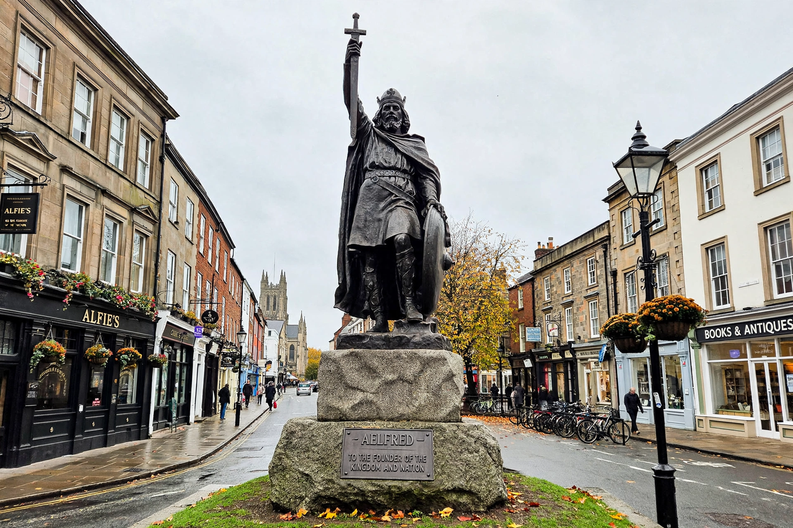

Alfred the Great
Alfred the Great (c. 849 – 26 October 899) was King of the West Saxons from 871 to 886 and King of the Anglo-Saxons from 886 until his death. The youngest son of King Æthelwulf, he succeeded his brother Æthelred during the Viking invasions and defended Wessex when the other Anglo-Saxon kingdoms had fallen to the Danes. He is the only English monarch known as "the Great".

| Reign | 871 – 899 |
|---|---|
| Predecessor | Æthelred I |
| Successor | Edward the Elder |
| Born | c. 849, Wantage, Berkshire |
| Died | 26 October 899, Winchester |
| Spouse | Ealhswith |
War with the Vikings
Alfred came to the throne amid the campaign of the Great Heathen Army. After the disastrous surprise attack at Chippenham in January 878, he retreated to the marshes of Athelney in Somerset, then rallied his forces and defeated Guthrum's Danes at the Battle of Edington. Guthrum accepted baptism, and the ensuing peace divided England between Wessex and the Danelaw.
Reforms
Alfred rebuilt his kingdom's defences with a network of fortified burhs, reorganised the fyrd into rotating levies, and created a navy. He issued a law code (the Doom Book), promoted learning after decades of decline caused, as he wrote, by war, and sponsored translations of Latin works into Old English — including Boethius's Consolation of Philosophy and Gregory the Great's Pastoral Care. The Anglo-Saxon Chronicle was begun in his reign.
Legacy
Alfred laid the foundations for the unification of England under his descendants. His reputation grew in the early modern period, when he was celebrated as a national hero, lawgiver and founder of the Royal Navy.
See also
Battle of Edington · Danelaw · Anglo-Saxon Chronicle · Edward the Elder